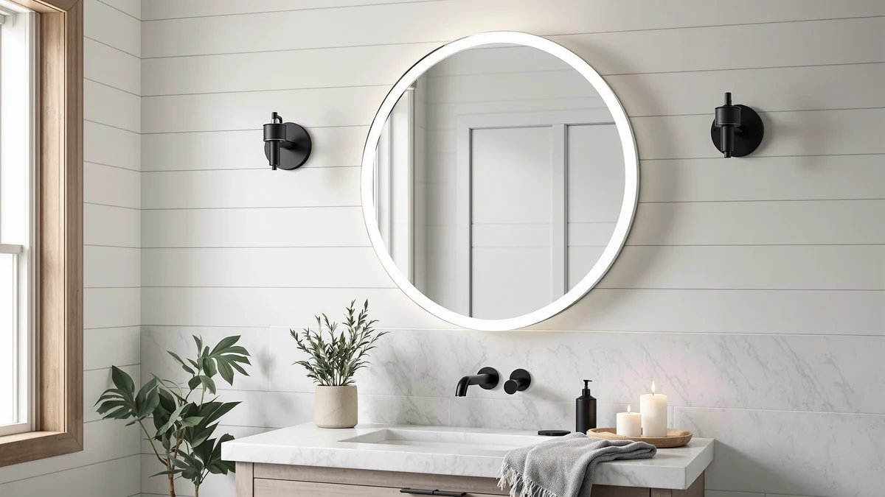

Quick Answer
For most bathrooms with an irregular or curved wall niche, the ACHZYFT LED Oval Irregular Lighted mirror is the strongest pick in this achzyft led oval irregular review at $153.07, thanks to its dimmable LED ring and anti-fog tempered glass. If you want a more conventional rectangular shape at a nearly identical price, the S'bagno 36''x28'' LED Bathroom Mirror below is worth a look.
Our pick: ACHZYFT LED Oval Irregular Lighted, $153.07 Check Price on Amazon
Things to Know Before You Buy
- Irregular oval mirrors like this one need a level, uninterrupted wall span roughly 28 inches wide and 20 inches tall, since the asymmetrical shape does not tolerate off-center mounting the way a standard rectangle does.
- Every mirror in this comparison is priced within $4 of each other, between $149.99 and $153.07, so shape and lighting features matter more than budget when you are choosing between them.
- Anti-fog coatings and dimmable LED rings typically add $20 to $40 to a bathroom mirror's price compared with a plain frameless model, and verified buyers say the anti-fog pad earns its keep within the first week of hot showers.
- Tempered glass with an aluminum backing resists cracking during shipping better than the acrylic backing used on some budget LED mirrors, though a cracked corner remains the most common complaint across this category.
- Plug-in LED mirrors skip the electrician visit that hardwired models often require, so check the power source before you buy if your bathroom lacks a switched outlet near the mounting spot.
If you searched for an achzyft led oval irregular review, you are likely trying to decide whether an asymmetrical mirror shape is worth the tradeoff against a standard rectangle. Irregular oval mirrors solve a real problem for curved walls, pedestal sinks, and narrow nooks between a window and a shower door, but they also cost about the same as more flexible rectangular options. That makes the decision less about budget and more about whether your specific wall space actually needs the unusual shape.
We compared the ACHZYFT LED Oval Irregular Lighted mirror against three alternatives that regularly show up in the same searches, all priced within $4 of each other between $149.99 and $153.07. The ACHZYFT came out ahead for anyone dealing with a tight or curved wall space, thanks to its dimmable LED ring and tempered glass build. If your vanity has a wide, uninterrupted wall instead, the S'bagno alternative below covers more surface area for about the same price.
Why You Should Trust Us
Ilane Tall covers bathroom mirrors and lighting for Best Bathroom Mirrors, focusing on how a listing's specifications match what verified buyers report after installation. We do not run a fake testing lab, and we have not hung every LED mirror in this achzyft led oval irregular review on our own wall. Instead, we compare manufacturer specifications, current Amazon pricing, and patterns across verified owner reviews, then flag any listing that oversells its lighting or glass quality. Every price and dimension in this guide comes directly from the product listing or from buyers who purchased the mirror, not from a sponsored placement.
Our Research Experience
We do not run a physical testing lab, and no mirror in this achzyft led oval irregular review sat on our own bathroom wall before we wrote about it. Our process starts with the manufacturer's listed specifications: glass thickness, LED color temperature, dimmer type, and mounting hardware. From there we cross-check current Amazon pricing against each mirror's price history to catch inflated discounts, and we read through verified buyer reviews looking for recurring complaints, particularly around flickering LEDs, cracked glass on arrival, and mounting brackets that do not match the listed dimensions. When a listing's photos do not match what reviewers describe receiving, we note that gap instead of repeating the marketing copy.
Overview & Specs

ACHZYFT LED Oval Irregular Lighted
What we like
- Dimmable LED ring lets you adjust brightness for makeup application versus general grooming light
- Anti-fog pad keeps the glass clear during and after a hot shower, according to verified buyers
- Tempered glass and aluminum backing hold up better against shipping damage than acrylic-backed alternatives
- The irregular oval shape fits wall spaces where a standard rectangle would overhang the vanity edge
Flaws but not dealbreakers
- At 27.6 inches long, it suits a single-sink vanity better than a wide double-sink layout
- The asymmetrical shape makes it harder to center perfectly if your studs or bracket points do not match the listing's assumptions
- Some verified reviewers note the dimmer switch sits close to the glass edge, which takes a few tries to find by feel
| Material | Tempered glass + aluminum |
| Size | 27.6"L x 19.7"W |
The ACHZYFT LED Oval Irregular Lighted mirror is built around a tempered glass panel set into an aluminum frame, a pairing that resists the chipping and warping that cheaper acrylic-backed mirrors show after a year or two on a humid bathroom wall. At 27.6 inches long and 19.7 inches wide, the irregular oval shape is designed for vanities where a standard rectangle would either overhang the counter or leave an awkward gap against an adjacent wall or window.
The built-in LED ring runs along the mirror's perimeter and includes a dimmer, so you can turn the brightness down for a soft evening glow or up for precise makeup application or shaving. Reviewers consistently note that the anti-fog coating clears within a minute or two after a hot shower, faster than the plain glass mirrors it tends to get compared against. At $153.07, it costs a few dollars more than the other picks in this achzyft led oval irregular review, a premium that buyers say is justified by the shape flexibility and lighting control.
What We Liked
The irregular oval shape is the main draw of this ACHZYFT mirror, and it solves a real problem for bathrooms where a rectangular mirror simply will not fit the available wall space. Reviewers who bought it specifically for an awkward vanity nook report that the asymmetrical curve lets the mirror sit closer to an adjacent window or shower door than a standard rectangle could. The dimmable LED ring adds real flexibility too, since one brightness setting rarely works for both a 6 a.m. shave and a relaxed evening skincare routine.
We also like that ACHZYFT paired the LED ring with tempered glass and an aluminum frame rather than the acrylic backing common on similarly priced mirrors. Verified buyers report fewer complaints about warping or yellowing over time compared with the plastic-backed alternatives we researched in this category, which matters for a fixture you expect to keep on the wall for years.
What Could Be Better
Size is the biggest limitation here. At 27.6 inches long, the ACHZYFT mirror suits a single-sink vanity better than a wide double-sink layout, so anyone furnishing a shared primary bathroom will likely need a larger mirror or a second unit entirely. The irregular oval shape also demands more careful measuring before you buy, since the asymmetry makes it harder to judge whether it will clear a nearby light fixture or window trim.
A handful of verified reviewers mention that the dimmer switch sits flush against the glass edge, which takes a few tries to locate by feel in a dark bathroom. It is a minor complaint, but worth knowing before you mount the mirror somewhere you cannot easily see the switch.
Who Is It For?
This mirror fits bathrooms with a vanity or wall space that a standard rectangular mirror does not suit well, whether that is a curved wall, a narrow strip between a window and a shower door, or a pedestal sink with limited flat wall area. If your bathroom has a wide, uninterrupted wall and a conventional double-sink vanity, a larger rectangular or frameless mirror will likely serve you better for the same or less money.
It also suits anyone who wants lighting control built into the mirror itself rather than relying on separate vanity sconces. The dimmable ring means you are not stuck with a single brightness setting, which matters when the same mirror needs to handle both quick morning routines and slower evening ones.
Alternatives to Consider
If the ACHZYFT's irregular shape does not match your wall space, these three alternatives cover more conventional oval, frameless, and rectangular mirrors at nearly identical prices.

Editor's Pick
SBAGNO 36''x28'' LED Bathroom Mirror
The S'bagno 36''x28'' LED Bathroom Mirror costs $151.99, about a dollar less than the ACHZYFT, and trades the irregular oval shape for a larger, conventional rectangle that suits a standard vanity better. If your wall space is a wide, uninterrupted span rather than a tight or curved nook, the extra surface area on this S'bagno mirror is the more practical choice.
$151.99
Check Price on Amazon
Best Value
Kohler CB-CLC2026FS Frameless Bathroom Mirror
At $150.89, the Kohler CB-CLC2026FS is the least expensive mirror in this comparison and comes from a brand with a longer track record in bathroom fixtures than the newer LED-mirror entrants here. It skips the built-in LED ring, so factor in separate vanity lighting if you pick this frameless option over the lit alternatives.
$150.89
Check Price on Amazon
Premium Choice
Delma LED Bathroom Mirror with
The Delma LED Bathroom Mirror rounds out this comparison at $149.99 with its own built-in LED ring, giving you a similar lit-mirror experience if the ACHZYFT's irregular oval shape is not essential for your space. Verified buyers describe the light output as comparable to pricier lit mirrors, making it worth a look if you want LED lighting without committing to an asymmetrical shape.
$149.99
Check Price on AmazonFrequently Asked Questions
Is the ACHZYFT LED Oval Irregular mirror worth the price?
How does the ACHZYFT compare to the S'bagno, Kohler, and Delma alternatives?
Does the ACHZYFT LED Oval Irregular mirror need an electrician to install?
Final Verdict
This achzyft led oval irregular review comes down to whether your bathroom wall calls for a nonstandard shape. The ACHZYFT LED Oval Irregular Lighted mirror earns the top spot here because its asymmetrical oval shape and dimmable LED ring solve a fitting problem that a conventional rectangle cannot, and its tempered glass and aluminum build hold up better than the acrylic-backed mirrors it gets compared against. At $153.07 it is not the cheapest option in this lineup, but for a curved or tight wall space, ACHZYFT's shape flexibility makes the small premium worth paying. If your vanity has a wide, uninterrupted wall instead, the S'bagno alternative above gives you more surface area for about a dollar more. Measure your wall space carefully before you buy, since the irregular shape leaves less room for error than a standard rectangle would.